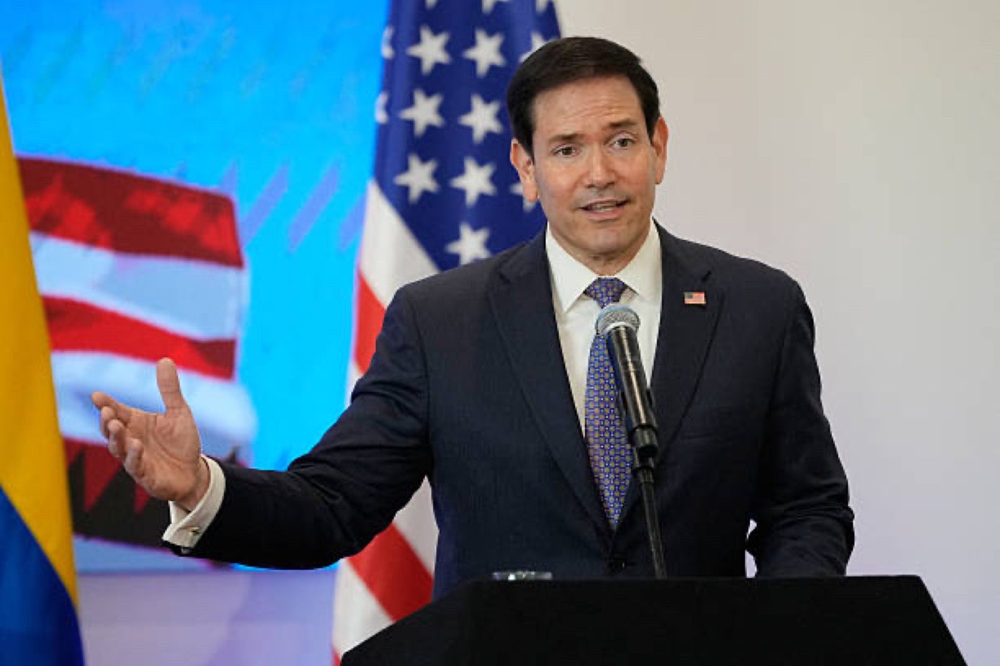
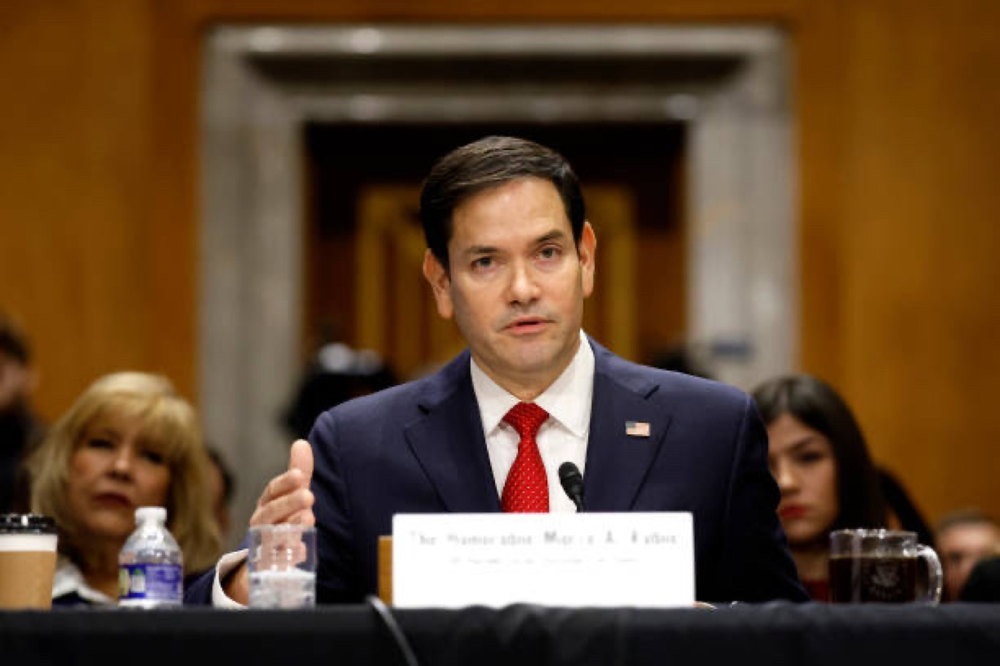
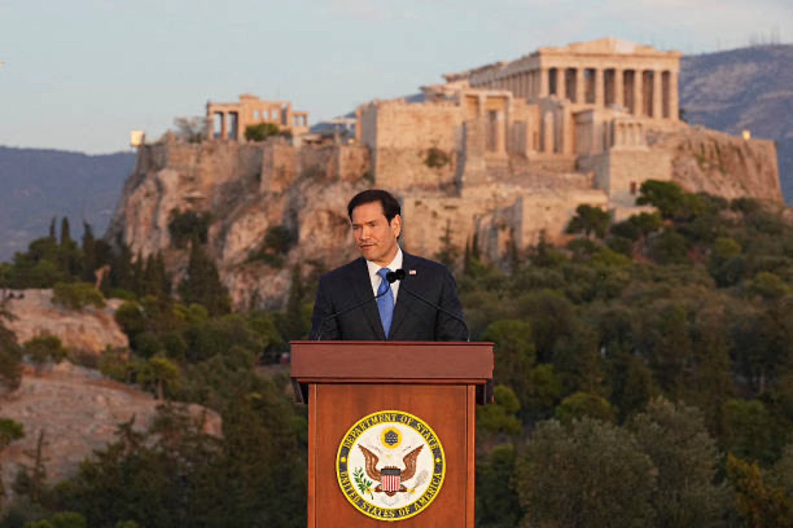
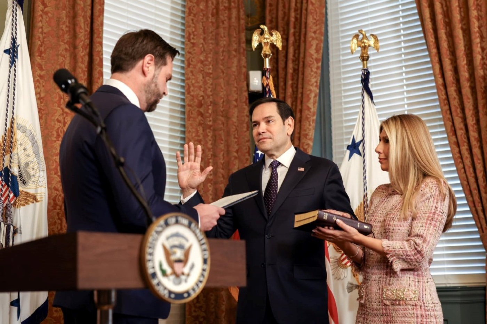
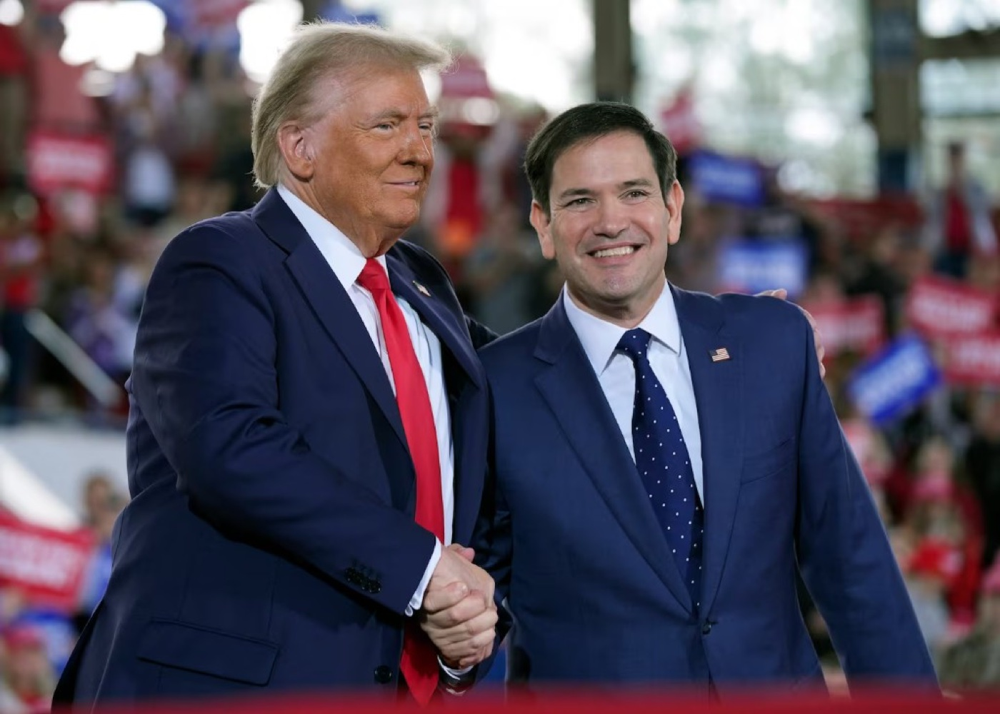
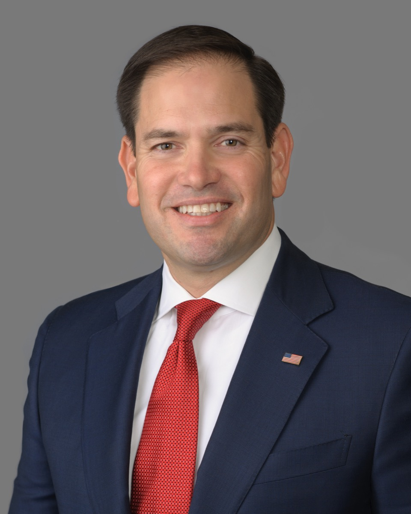

01
Opportunity Economy
Lower costs, higher wages, and policies that reward work, savings, and small business.

A New American Century
Restoring opportunity at home and American leadership abroad—with the experience to deliver results for working families.
Meet the Candidate
From Miami to the United States Senate—a story of family, freedom, and public service.

Senator Marco Rubio has spent his career fighting for working families, defending American interests overseas, and proving that bold ideas still have a place in our politics.
The son of Cuban immigrants, Rubio grew up in Miami and learned early that freedom and hard work can change a family's story. He served in the Florida House of Representatives, including as Speaker, before representing Florida in the United States Senate.
Now he brings that same experience to a run for the White House: a proven record on foreign policy, bipartisan results on issues that matter to voters, and a message centered on restoring confidence in America's future.
Why Now
The next president must deliver on kitchen-table issues while standing firm for democracy and allies.

Lower costs, higher wages, and policies that reward work, savings, and small business.
Support law enforcement, secure the border, and pursue lasting immigration reform.
Rebuild deterrence, stand with NATO and Indo-Pacific partners, and lead on trade.
Expand career pathways, empower parents, and prepare students to compete globally.
Policy Priorities
Kitchen-table priorities backed by a real Senate record—short on talk, long on solutions.
66% of Americans call inflation a very big problem.
38% of Americans—and 60% of Republicans—call illegal immigration a very big problem.
73% call healthcare affordability a very big problem.
64% call the federal budget deficit a very big problem.
74% say money in politics is a very big problem.
55% call drug addiction a very big problem.
64% are very concerned about housing costs.
Coalition
Leaders, allies, and donors this campaign would invite into a winning 2028 team.
Central Republican figure and proven national leader—key for party unity and turnout, though he has also voiced support for JD Vance.
Florida governor with deep GOP ties and a record on conservative priorities in Rubio’s home state.
Florida’s senior senator and a longtime colleague who has worked alongside Rubio in the Senate.
Former presidential candidate with national campaign experience and a strong foreign-policy profile.
Major Republican donor; Axios reported he would back Rubio over JD Vance in a potential 2028 primary.
Axios, July 8, 2026 →Rally stops, town halls, and unity events with endorsers will be announced as the primary calendar takes shape.
On the Trail
Town halls, rally lines, and kitchen-table conversations—the heartbeat of a people-powered campaign.


Grassroots teams win elections. Volunteer in your community and help us earn every vote.
Get Involved
Grassroots
Sign up for phone banks, door-to-door canvasses, and events in your area. Every hour counts.